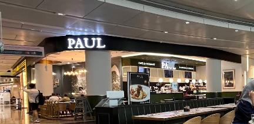
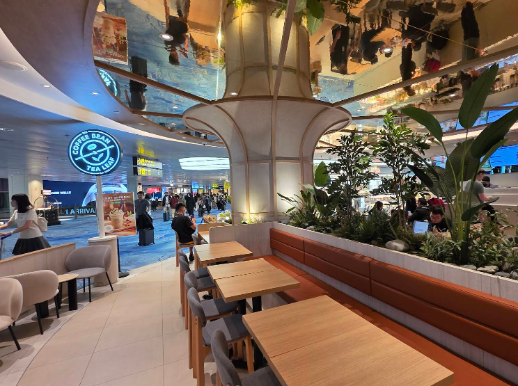
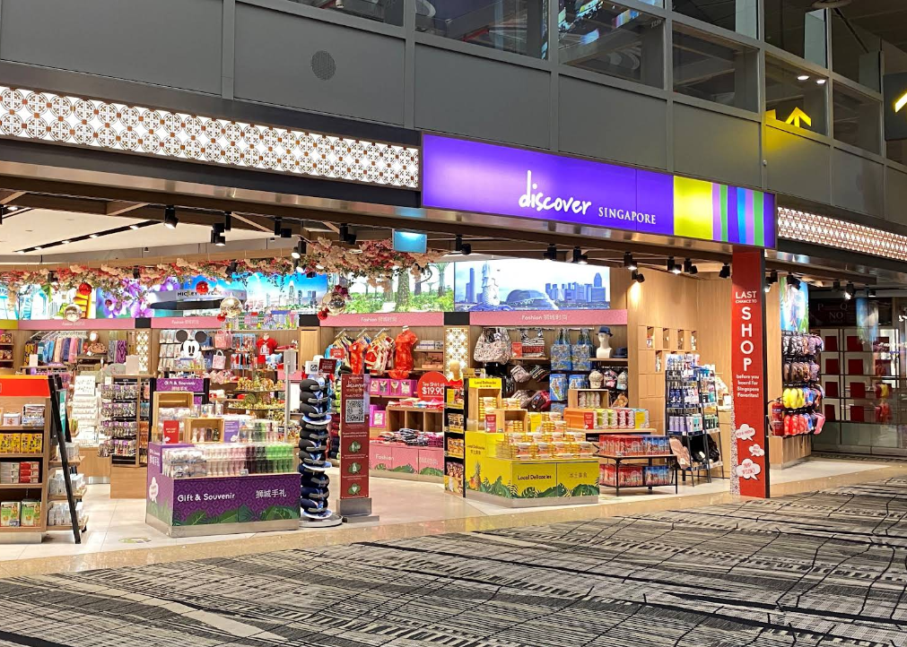
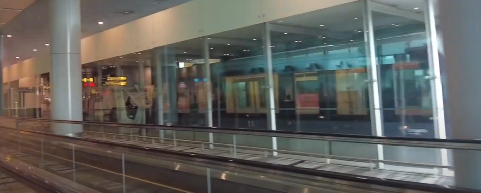
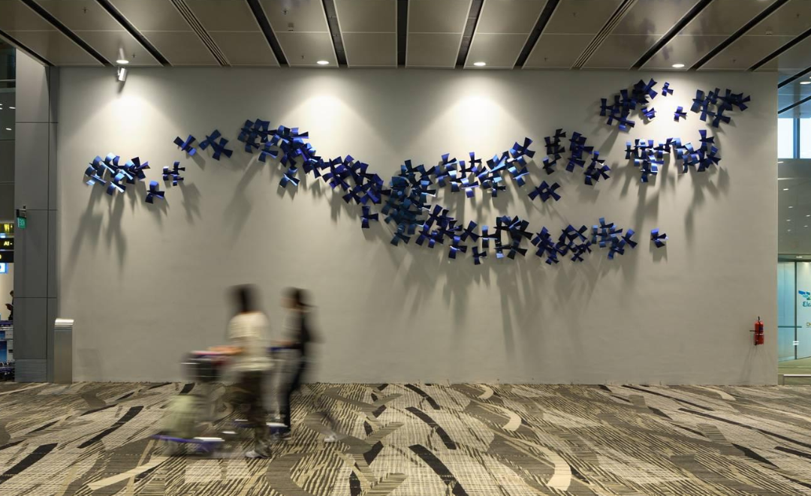
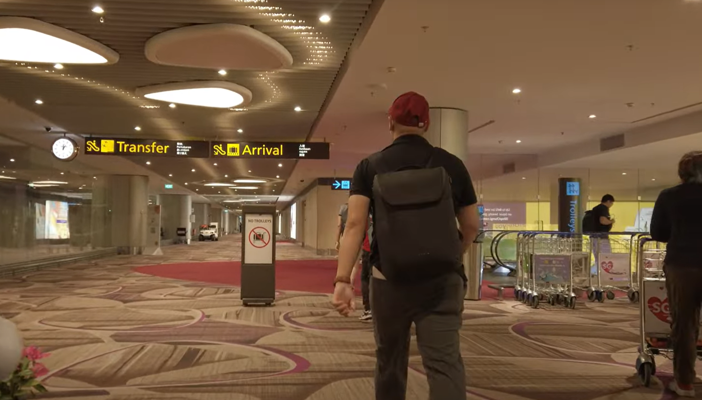

第一步
行前准备
出发前请务必准备好以下必需文件和完成相关手续
护照 (Passport)
- 剩余有效期在 6 个月以上
- 至少有 2 页空白签证页
学生准证文件
仅适用于学生
- 原则批准信 (IPA) 打印版原件
- 录取通知书 (Offer Letter) 备用
第二步
抵达樟宜机场
从下飞机到出行李大厅的完整指引
入境通道选择
自助通道
Automated Lane
推荐
适用人群：持可机读护照的旅客
✅ 快速高效
✅ 无需排队等待
✅ 包括首次持IPA入境者
人工通道
Manual Counter
适用人群：需要协助或护照无法机读者
⏰ 等待时间较长
👥 移民官员人工办理
🧳 适合携带大型随身物品
重要提示：
无论是否首次持 IPA 入境，均可选择自助通道完成入境手续。
航站楼内部指引
先选择您的航站楼，再选择具体区域查看详细路线指引
T1
C区航站楼
参考地标：PAUL Bakery & Restaurant

入境大厅 (Immigration Hall)

T1
D区航站楼
参考地标：The Coffee Bean & Tea Leaf

入境大厅 (Immigration Hall)

T2
E区航站楼
参考地标：Travelex Money Changer

入境大厅 (Immigration Hall)

T2
F区航站楼
参考地标：Swarovski
入境大厅 (Immigration Hall)

T3
A1-8区航站楼
参考地标：Discover Singapore

入境大厅 (Immigration Hall)

T3
A8-21区航站楼
参考地标：Skytrain to A15-A21 Stop

入境大厅 (Immigration Hall)

T3
B区航站楼
参考地标：Birds in Flight

入境大厅 (Immigration Hall)

T4
T4 航站楼
重要提示：T4 航站楼到达与出发位于不同楼层，请务必跟随“Arrival”指示牌前进。
路线指引

入境大厅 (Immigration Hall)

第三步
交通接驳
选择最适合您的交通方式前往目的地
选择您的目的地
网约车
Grab / Gojek
推荐
出租车
Traditional Taxi
费用
$30 - $45
耗时
≈ 30分钟
⏰ 需排队候车
💰 午夜附加费
🏢 机场出租车站
公共交通
MRT + Bus
经济
费用
$3 - $4
耗时
≈ 60分钟
机场 CG2
→
Tanah Merah EW4
→
Buona Vista EW21/CC22
→
Kent Ridge CC24
网约车
Grab / Gojek
推荐
出租车
Traditional Taxi
费用
$35 - $50
耗时
≈ 40分钟
📞 高峰期建议预约
💰 附加费适用
🏢 机场出租车站
公共交通
MRT + Bus
经济
费用
$4 - $5
耗时
70-80分钟
机场 CG2
→
Tanah Merah EW4
→
Pioneer EW28
→
179路公交
网约车
Grab / Gojek
推荐
出租车
Traditional Taxi
费用
$25 - $35
耗时
≈ 25分钟
🌙 午夜加成适用
🏪 就近下车
🏢 机场出租车站
地铁直达
MRT Direct
经济
费用
$3 - $4
耗时
≈ 40分钟
机场 CG2
→
Tanah Merah EW4
→
City Hall EW13/NS25
→
步行至SMU
交通方式详细指南
网约车 / 出租车指南
网约车 (Grab/Gojek)
- 在指定的"Arrival Pick-up"（到达乘车点）等候
- 在应用内确认您的航站楼和上车点门牌号
- 费用通常低于出租车，且可提前预估
- 支持多种支付方式，包括信用卡和现金
出租车 (Traditional Taxi)
- 前往官方指定的出租车等候区排队上车
- 费用按计价器计算，包含机场附加费
- 深夜和高峰时段有附加费
- 接受现金和信用卡支付
公共交通指南
1
前往地铁站
根据航站楼指引，前往位于T2或T3的地铁站入口，跟随"Train to City"标志
2
乘车到丹那美拉
机场地铁站为始发站，列车将开往丹那美拉（Tanah Merah）站
3
重要换乘 - 丹那美拉站
到站后列车两侧的门都会打开，请注意站台指示牌，下车并换乘开往"Tuas Link"方向（西行列车）的列车进入市区
4
继续行程
换乘后，您已进入东西线（绿线）主干线。使用地图应用规划后续路线